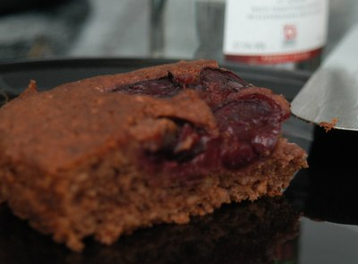

| Zutaten für 4 Personen: | |
| 1 kg | Sauerkirschen |
| 2 dl | Weisswein |
| 300 g | Zucker |
| 250 g | Butter |
| 4 | Eier |
| 1,2 dl | Milch |
| 300 g | Mehl |
| 3 TL | Backpulver |
| 200 g | Haselnüsse gemahlen |
| 3 TL | Kakao |
| 3 TL | Stärke |
| 6 EL | Kirschlikör |
Kirschen waschen und entsteinen. Mit 4 EL Zucker bestreuen und mit Weisswein übergiessen. 1 Stunde stehenlassen.
Das weiche Fett, restlichen Zucker, Eier, Milch, Mehl, Backpulver, Haselnüsse und Kakao zu einem weichen Teig verrühren. Auf ein gefettetes Backblech streichen.
Die Kirschen abtropfen lassen. Die Flüssigkeit eventuell mit Wasser zu einem Viertelliter auffüllen.
Die Kirschen auf den Teig verteilen.
Im Backofen bei 200°C etwa 40 Minuten backen.
Für den Guss den Kirschsaft mit angerührter Speisestärke binden. Kirschlikör unterrühren. Guss auf den Kuchen streichen, fest werden lassen.
Beilage: Schlagsahne
Pro Stück: 320 Kalorien, 1335 Joule
Herbert Eigenmann, Code: KSB
Ganz OK. Die Kirschen geben einen frischen Geschmack und der Teig ist nicht so trocken. RE 4.8.2010
@LINKBACK_TAG@ @WAKELOCK@